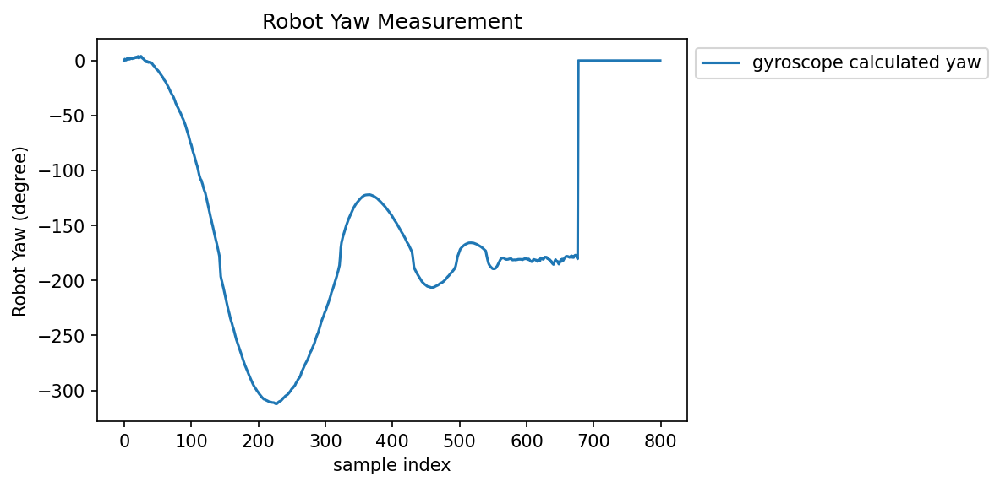
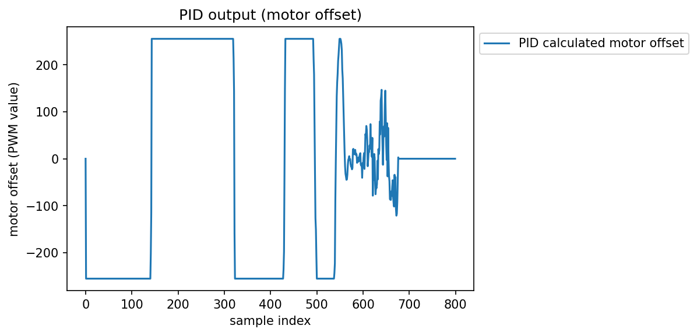
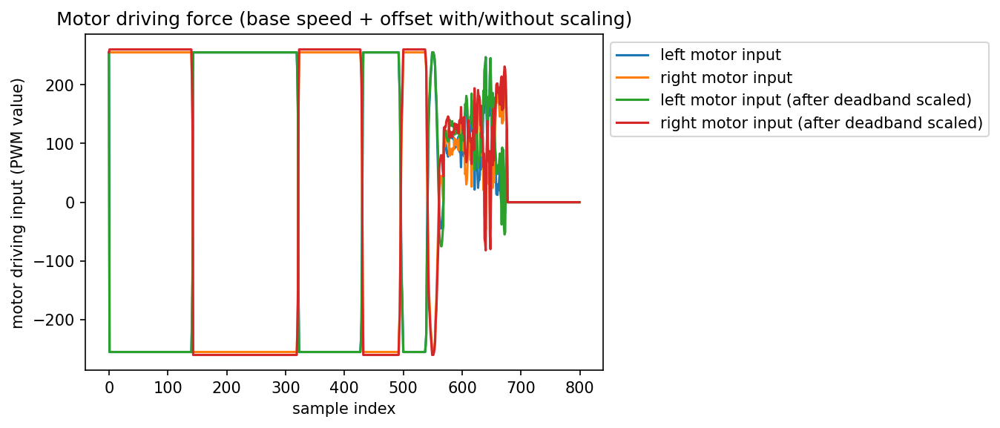

The ultimate goal of this lab is to choose one of the three tasks provided by the instructor, and to complete the task by implementing PID control on my robot. I chose to do task B: drift much. For this task, my robot will drive fast forward, then turn with drift to do a 180 degree turn, and return the direction it came from without stopping. The PID controller in this case will be controlling the orientation of the robot by introducing a difference in motor speeds. Since PID control is so widely used and fundamental to feedback control, there are tons of materials online. I am not going to repeat here. One good source would be the wiki page on PID controller.
BLE Debugging Help
I know my initial implementation will have bugs, but I don't know what the bugs will be. However, debugging with the robot running on the field with my implementation of PID controller could be hard. One reason being that sensor readings are inputs to the PID controller, and we can't get the real sensor readings unless we actually place the robot on the ground. Another reason being that Serial.print() is out of the game as the robot will be moving around, and there will not be a cable connecting my laptop and the robot.
The best option in this case would be to send data over bluetooth. However, there are some constraints we need to consider:
- Bluetooth transmission will add significant delay.
- Bluetooth connection could be lost when the robot is experiencing rapid movements.
- The internal RAM of the robot is 384kB (96k 32-bit float).
- Data should not be sent as they are being collected.
- Data should be sent when the robot is stationary.
- We need to be careful of the datapoints we can collect.
Based on the requirement, I implemented and tested the following code snippet on my robot. In this script, data is first collected and stored into fixed-size arrays when the robot is running. Then after the robot becomes stationary, the bluetooth module is initialized, and when a connection comes in, the robot starts sending data in the arrays to my laptop. The array size is chosen such that it only uses a fraction of RAM available. Note that my_ble.check_connection() must be called frequently (but not too frequent) for the robot to stay connected with the laptop. my_ble.send_double_array() is a function that iterates array elements, checking connection and sending an element in each iteration.
case connect_ble:
if (BLE_COLLECT)
{
// ble init
Serial.println("\nBLE setup");
my_ble.init();
while(!my_ble.listen_for_connection()); // connect to ble
// delay 200 * 50 = 10000 ms = 10 s to wait for notification setup
for (int i = 0; i < 200; i++){
my_ble.check_connection();
delay(50);
}
}
current_move = send_data;
case send_data:
my_ble.send_double_array(ble_angle_data, data_samples);
my_ble.send_double_array(ble_motor_offset, data_samples);
my_ble.send_double_array(ble_motor_left, data_samples);
my_ble.send_double_array(ble_motor_right, data_samples);
my_ble.send_double_array(ble_motor_left_scale, data_samples);
my_ble.send_double_array(ble_motor_right_scale, data_samples);
if (DBG_MODE){Serial.print("Send_data end.\n");}
while (1)
; // block resending data
break;
Task B: Drift much?
As I mentioned in the beginning, the robot in this class will first drive fast towards a wall. Then it will turn and drift to do a 180 degree turn, and return the direction it came from without stopping. This involves two stages:
- The robot driving forward as fast as possible for a finite amount of time.
- PID control engages to turn the robot 180 degrees. When the difference between the set point and the current orientation is close enough, the robot starts accelerating to drive back.
PID-controlled orientation
The first step would be to implement the PID controller to control the orientation of the robot while it is stationary. I used the ArduPID library for PID calculations. The input to the PID controller is the yaw of the robot, calculated from the gyroscope. The set point would be the orientation at start up, and the output is half the difference between the two wheel PWM inputs. I am providing a simple code snippet below.
current_orientation = my_imu.get_ang().yaw_gyr;
// pid compute
orientation_controller.compute();
// feed updated turn speed into the motors
my_motors.car_turn(turn_speed, -turn_speed);
break;
The video below shows the robot sitting stationary in the beginning. When the robot is kicked, it tries to return to its original orientation.
PID orientation control (stationary)
There is also a problem with deadband scaling. The PID controller would give an output number between -255 to 255. However, the wheels do not move if the PWM input value is less than 40. I took care of that in my wrapper class my_motor. When my_motor.car_turn(left_speed, right_speed) is called, the parameters are linearly scaled from [-255, 255] to [-255, -40] U [40, 255].
For PID tuning, I tried out a couple of different heuristics, and picked the one that works the best for this application. Here are the parameters I used.
kp = 30ki = 2e-3kd = 70
Integration
The next step would be to integrate the PID controller into the robot's control sequence. There are two stages if you recall:
- The robot driving forward as fast as possible for a finite amount of time.
- PID control engages to turn the robot 180 degrees. When the difference between the set point and the current orientation is close enough, the robot starts accelerating to drive back.
Integration is easy, and I'm providing the code snippet below to show how I did it.
switch (current_move)
{
case travel_forward:
// travel forward
my_motors.car_straight(255);
delay(800);
// set current orientation
current_orientation = my_imu.get_ang().yaw_gyr;
set_orientation = current_orientation - 180;
// set the next move
current_move = drift;
// time drift state time
time_eof_forward = millis();
break;
case drift:
// update current orientation
current_orientation = my_imu.get_ang().yaw_gyr;
// pid compute
orientation_controller.compute();
// feed updated turn speed into the motors
my_motors.car_turn(turn_speed + base_speed, -turn_speed + base_speed);
// check if the difference between set point and current orientation is small enough
// modify base speed if the difference is small
// code omitted
// stop the robot after timed out
if (millis() - time_eof_forward > timeout)
{
my_motors.car_brake(255);
current_move = connect_ble;
}
break;
Videos below shows the completion of task B.
Robot doing task B (normal speed) Robot doing task B (slow motion)Data & Discussion
I did not hit much issues when implementing the task or tuning the PID controller. Therefore, I did not use the debugging script until I have finished implementation. However, it's still good to collect the data and see if there is anything that can be optimized.
The plot below shows how the robot yaw measurement changes over time. X-axis is not time, but that does not have any impact on our analysis. From the plot below, we can read that the robot experiences 5 overshoots when trying to make the 180 degree turn. There is definitely room for improvements when looking at the instructor's plot and finding only 2 overshoots there. The PID control parameters are tuned when the robot is sitting in stationary, so those parameters may not be optimal anymore when the robot has non-zero base speed.
 Robot orientation plot (measurement starts right after the robot changes its orientation set point).There are two plots I am putting below. The first plot shows the raw PID output (ranges from -255 to 255). The second plot shows the left and right motor input (with base speed added) before and after deadband scaling.
From the first plot before 550 samples, we see the PID controller is trying to pull the robot really hard. That could be the reason of a too agressive parameter tuning, and it could be the reason why my robot has so many overshoots. Making kp or kd smaller could help in this situation.
Looking at both plots after 550 samples, that is when the robot is travelling in the direction it came. We can confirm that by looking at the second plot and notice that there is a non-zero base speed. However, we also notice that PID outputs becomes larger, meaning that the robot is unstable and the error becomes larger. This is probably due to the parameters being too aggressive when the robot's speed is larger, and they are no longer good. In this situation, I am considering using two different sets of PID parameters for when the robot is drifting, and for when the robot is travelling backwards. Otherwise, it will be difficult for the robot to pick up speed on its way back.
 PID output plot (range: -255 to 255) (measurement starts right after the robot changes its orientation set point).  Motor input plot (measurement starts right after the robot changes its orientation set point).